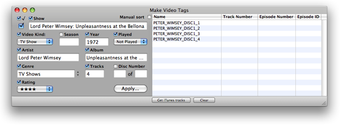

Using Make Video Tags
Step 3: Entering Global Tag Information
The left area of the main window is where global tag information is entered. Information in these entries can eventually be applied to the corresponding tags of each of the selected tracks. All tags are optional.
No information will saved to the selected tracks in iTunes until you click the "Apply..." button.

Enabled (Check Mark): Click the Checkbox to check/uncheck each track's enabled checkbox.
Show: Enter some text to be used for each track's Show tag.
Video Kind: Select from "Movie", "Music Video" or "TV Show" from the popup.
Season: Enter a Season Number. Only numbers may be entered.
Year: Enter a number for the Year tag. Only numbers may be entered.
Played: Select "Played" or "Not Played" from the popup.
Artist: Enter some text to be used for each track's Artist tag. Often this is also the Show name.
Album: Enter some text to be used for each track's Album tag. This is sometimes entered as the Show Name and the Season Number.
Genre: Enter a Genre name, or select from the popup menu, activated by the double-arrow icon adjacent to the Genre text box.
Tracks: Enter a number for the Track Count.
Disc Number: Enter the numbers for Disc Number and Disc Count.
Rating: Select the number of stars to rate each track from the popup.
Click the checkbox adjacent to the specific tag or option to use that information for the corresponding tag in all of the selected tracks. Leaving a text box blank and checking the checkbox will send blank text to that particular tag.
No information will be saved to the selected tracks in iTunes unless a tag's checkbox is checked and until you click the "Apply..." button.
<- 2. Selecting Tracks | 4. Entering Specific Track Tag Information ->